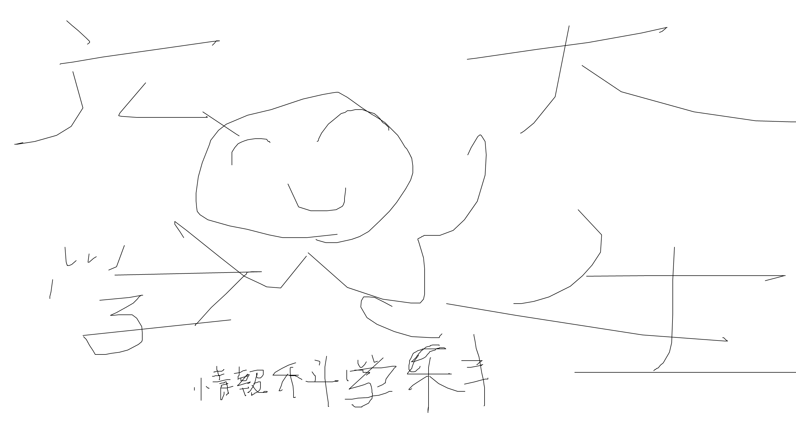

野瀬友稀(nose tomoki)

〒739-0029
広島大学情報科学部情報科学科
ゲーム大好き
情報科学部tell:(082)424-7611
私は福井県出身、広島大学情報科学部情報科学科所属の野瀬友稀です。
わたしの趣味はゲームをすることで最近は特にMinecraftをしています。
大学ではプログラムの構成を理解し、効率を上げるため、AIを活用することによって高度な人材に成長していきたいです。
この画像はヨーロッパです。私は青い空の画像が好きなので紹介します。

私の好きな食べ物は寿司です。その中でもサーモンが一番好きです。